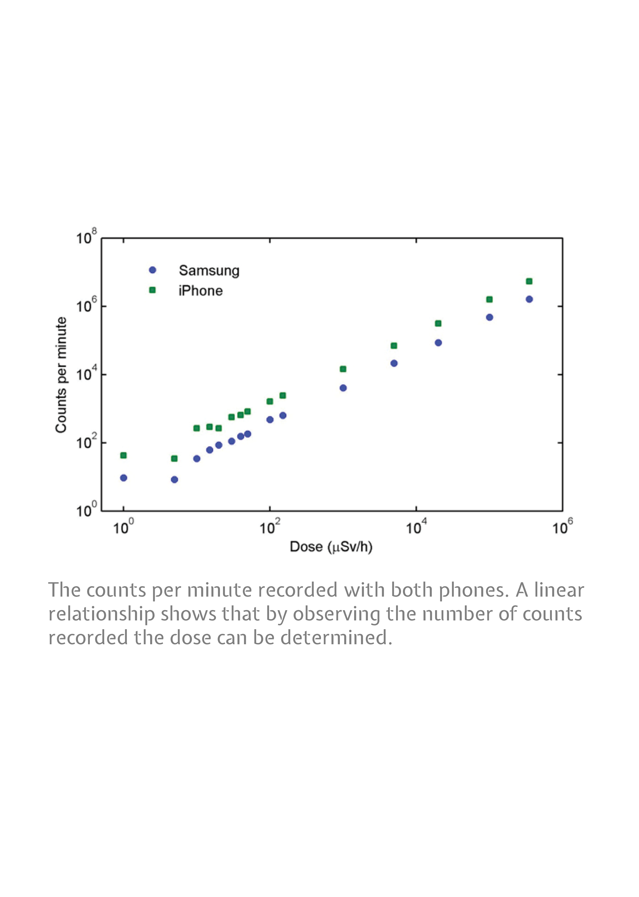
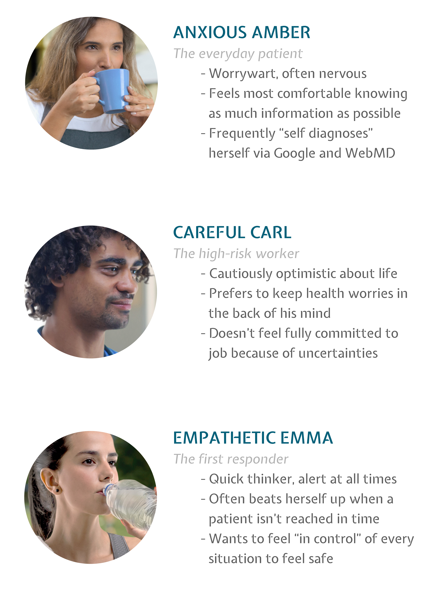

Glow is a mobile app radiation detector in which the camera detects X-rays and the phone’s computing power determines the source of radiation. The app measures levels of gamma and warns the user when they are approaching potentially harmful levels of radiation. It also provides a real-time radiation detection grid, creating a map of hot spots that allows first responders, firefighters, and police officers to act immediately.
-
Research
Charge-coupled devices, including those used in cameras, can detect X-rays. So why not use a smartphone camera as a walking gamma ray detector? Phones today have the computing power to determine nearby sources of radiation while eliminating false positives. According to an NPR article, with the help of a program on a remote server, apps can capture and measure an average energy level, then use a model to figure out what types of radioactive mamterial could be emitting the radiation.
To put it simply:
- Cell phones have cameras and camera sensors react to radioactivity.
- High energy particles strike a sensor array and register as small bright pinpoints or thin streaks of light.
- An app may not be as sensitive as a dedicated radiation detector, but it works well enough to alert users to dangerous levels of radiation.
- 
- 
-
User Personas
To gauge the app's effectiveness for different audiences, interviews were conducted with a wide variety of individuals from different occupations. These were some key findings for who this app could benefit:
- The everyday patient. One of the many uncertainties approaching an x-ray scan or operation is the level of radiation exposed. Being well-informed, especially on whether the amount of radiation is actually harmful or not, can help reduce uncertainties.
- The high-risk worker. Workers in hospitals, food processing plants, and other industries where radiation is used can be assured knowing that they will be warned whenever they are approaching potentially harmful levels of radiation.
- The first responder. Responders can create a walking, moving network with a radiation detector grid. The more people that have the app, the tighet the detection grid becomes - becoming abundantly uesful to map danger areas.
-
Concept Development
I developed the app with a few key features to incorporate:
- Warnings. The app will send alerts when the user is within a 0.5 mile radius of 400 mSv, which is considered a dangerous amount if received in a short time.
- A map dashboard. The home screen of the app displays a real-time radiation detection grid that helps create a hot spot of danger zones.
- A camera. The camera sensors help detect radioactivity. The mSv number is generated in real-time along with a brief analysis of how safe it is.
- Data logs. mSv recordings are stored in a personal data log with an image, radiation level, date, and location.
-